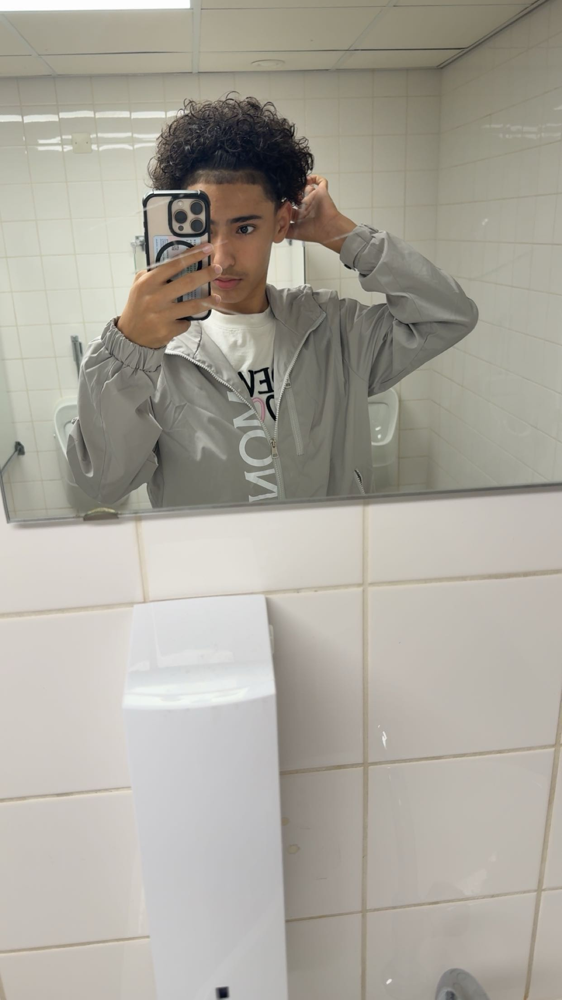
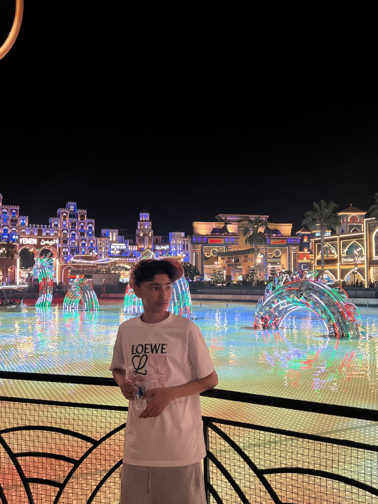
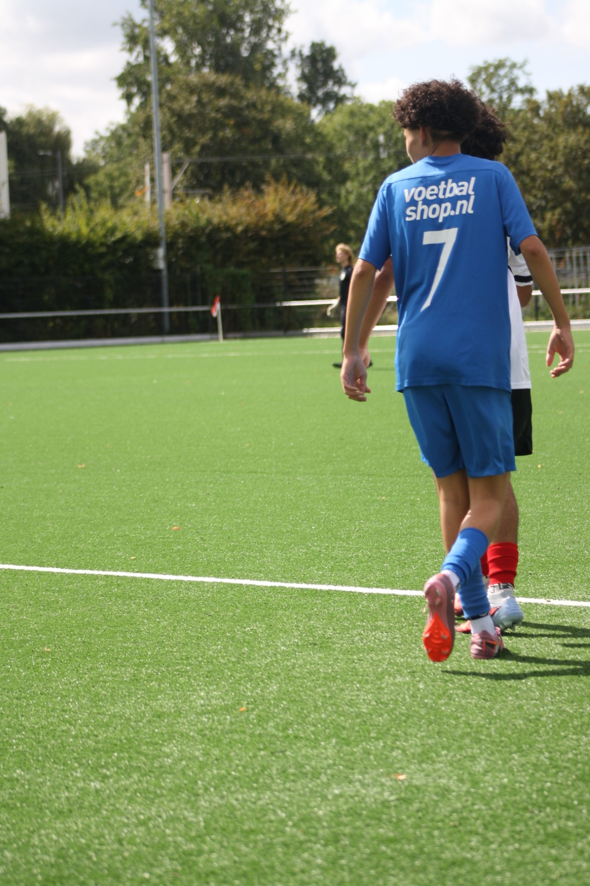
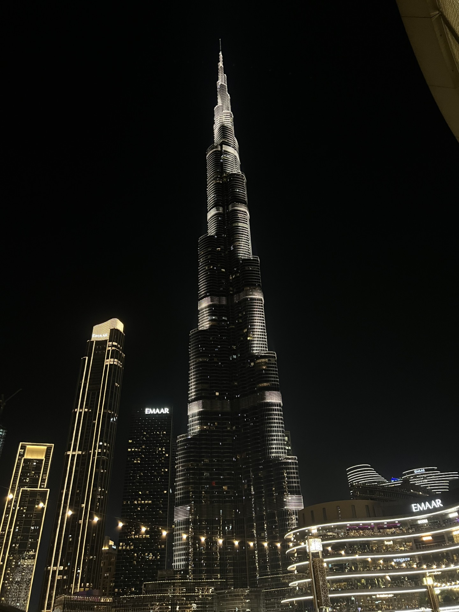
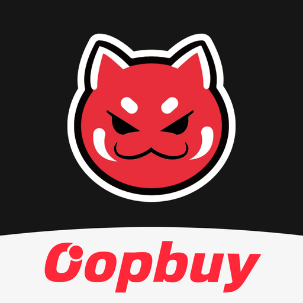

<!DOCTYPE html>
<html lang="en">
<head>
    <meta charset="UTF-8">
    <meta name="viewport" content="width=, initial-scale=1.0">
    <title>Home</title>
    <link rel="stylesheet" href="yasserstyle.css">
</head>
</html>
<body>

    <div class="container">
        
        
        <nav class="navbar">
            <div class="logo">
                
            </div>
            
            <ul class="nav-links">
                <li><a href="index.html" class="active">Home</a></li>
                <li><a href="opvolgyasservoetbal.html">voetbal</a></li>
                <li><a href="opvolgyasserdubai.html">dubai</a></li>
                <li><a href="opvolgyasseroopbuy.html">oopbuy</a></li>
                <li><a href="contact.html">contact</a></li>
            </ul>
        </nav>

    </div>


<main class="main-container"> 
    <div class="about-me">
         <h1>About Me</h1>
          <p>Welkom op mijn portfolio! Ik ben <strong>Yasser Achahbar</strong>, een gemotiveerde student in leerjaar 1 van de opleiding Software Developer op het <strong>Techniek College</strong>. Op deze site vind je mijn reis, projecten en wie ik echt ben.</p>
           
          <h3>Opleiding</h3>
        <p><strong>Software Developer (Leerjaar 1) - Techniek College</strong></p>
        <p>Hier leer ik de basis van programmeren, het bouwen van applicaties en websites met verschillende programmeertalen.</p>
        <div class="about-me">
        <h1>Passies & Ervaring</h1>
        
        <p><strong>Voetbal & Sport:</strong><br>
        Voetbal is een heel groot deel van mijn leven! Ik ben een fanatiek sporter en sta vaak op het veld om samen met een team lekker te ballen. Heel soms ga ik daarnaast ook naar de gym om fit te blijven.</p>

        <p><strong>Werkervaring & Zoektocht:</strong><br>
        Momenteel heb ik geen baan, maar ik ben wel actief op zoek! Eerder heb ik waardevolle werkervaring opgedaan door te werken in een supermarkt en als bezorger, waardoor ik weet wat hard werken en klantgericht zijn is.</p>

        <p><strong>Projecten:</strong><br>
        Hier bouw ik aan dingen die ik heb gedaan of van plan ben te maken. Denk aan code-projecten, uitdagingen en nog veel meer!</p>
    </div>
          
         </div> 
         <div class="main-image"> 
            
         </div> 
        </main>
</section>


<section class="projects">
        <a class="card" href="opvolgyasservoetbal.html">
          
          <h2> Voetbal </h2>
          <p> Mijn passie voor sport, teamwork en doorzettingsvermogen op het veld.</p>
        </a>
        <a class="card" href="opvolgyasserdubai.html">
          
          <h2> Dubai </h2>
          <p> Mijn favoriete plek! Een prachtige, moderne stad vol indrukwekkende architectuur. </p>
        </a>
        <a class="card" href="opvolgyasseroopbuy.html">
          
          <h2>Project 3</h2>
          <p> Again, projects/things you have done or plan to do. could be something about code, puzzle, ...</p>
        </a>
      </section>

      <div class="kolommen-container">
 <div class="kolom">
    <h3>locatie</h3>
    <p>rotterdam, NL</p>
 </div>
 <div class="kolom">
    <h3>nummer</h3>
    <p>+31 6 11927026</p>
</div>
 <div class="kolom">
    <h3>mail</h3>
    <p>yasser.achahbar@hotmail.com</p>
</div>
 <div class="kolom">
    <h3>geboorte-datum</h3>
    <p>24-02-2010</p>
</div>
 <div class="kolom">
    <h3>opleiding</h3>
    <p>Software Developer</p>
</div>
 <div class="kolom">
    <h3>talen</h3>
    <p>Nederlands, Engels & Frans</p>
</div>

</div>

<video
    class="background-video"
    autoplay
    loop>
    <source src="Goku.mp4" type="video/mp4">
   
</video>
    


<footer class="site-footer">
    <div class="footer-links">
        <a href="contact.html">Contact</a>
    </div>
    <div class="footer-copyright">
        Copyright &copy; 2026 Yasser Achahbar
    </div>
</footer>


</body>
</html>